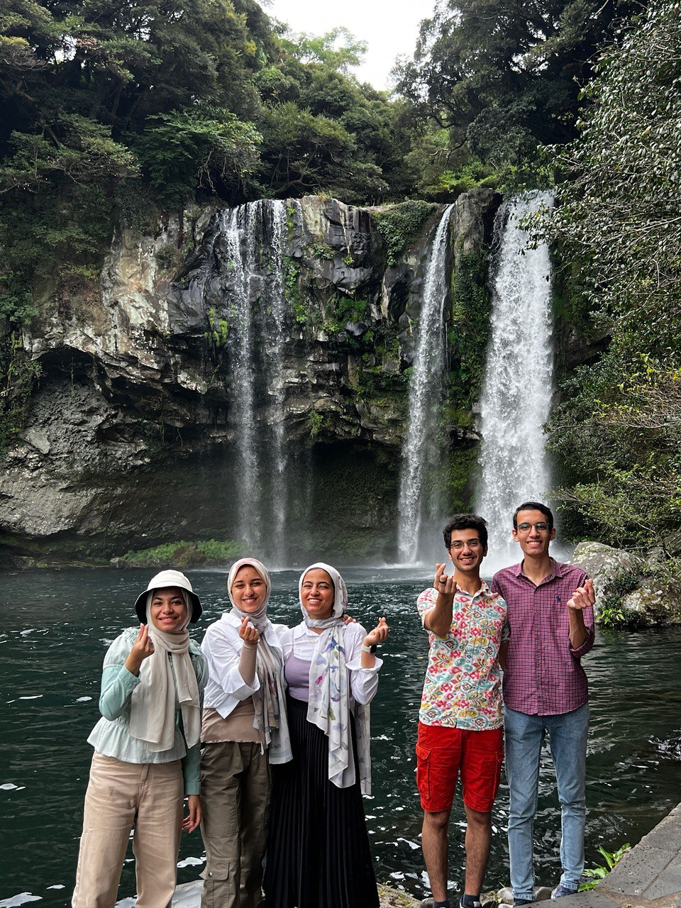
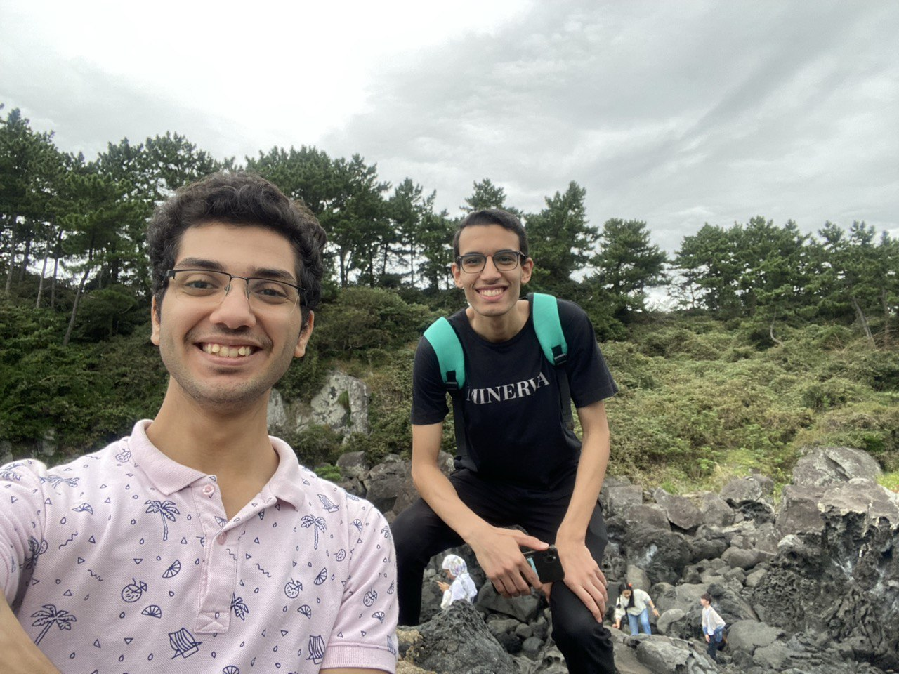
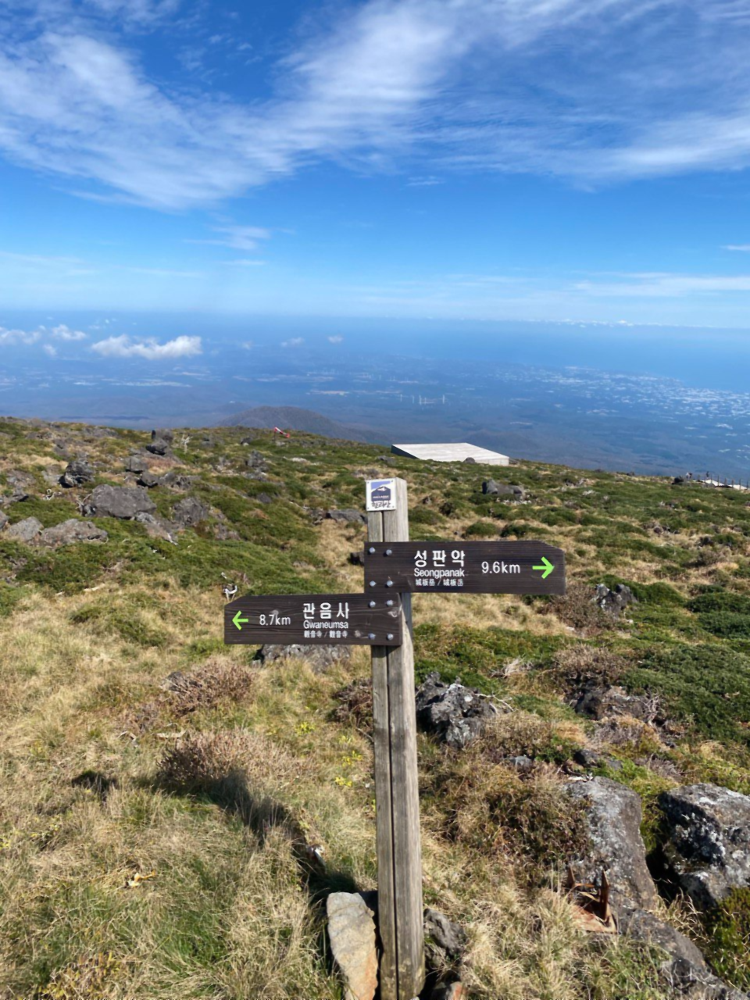

Alicia Nash — A Beautiful Mind (2001)”


A passionate writer and captivating storyteller
I am a person who loves to connect and communicate with people. My means of expression are through storytelling. Whether they are real stories inspired by my experiences (like those in my journey to earn global citizenship, or fictional stories that draw from my life check my medium, and this drive for some of my writtings) I am driven by the power of narrative.
One of the points that also intrigues me in life is giving to others. I believe God created us as groups and societies to interact and help each other. The quote "with great power comes great responsibility" from Spider-Man resonates deeply with me. For the past three years, I have been unofficially mentoring several students back home, helping them achieve their dream of studying abroad. I am thankful that their efforts culminated in finally reaching their dreams, with me being a part of their story.
I have shared my experiences and lessons learned academically, personally, and professionally in multiple podcasts featuring international students studying abroad.
Ta2shira in Arabic – link to Ta2shira podcast
Qaisa Taleb in Arabic – link to Qaisa Taleb podcast
Humans of Minerva in English – link to Humans of Minerva podcast


Avid Gamer, Nocturnal City Explorer, and Passionate Hiker
I have been an avid FIFA player since middle school, deeply involved in many communities of players in Egypt who played Ultimate Team, the online mode of FIFA. After traveling abroad for university, I had to part ways with my PlayStation, but the passion for the game remained. Fortunately, one of my classmates has a PS5, allowing me to continue playing FIFA with friends every now and then. This hobby keeps me connected to my love for soccer, even though my skills in real football don't quite match up to my virtual prowess.
In addition to gaming, I find joy in exploring cities at night. There is something magical about the city after sunset. I love taking long walks, discovering hidden corners and quiet streets that come alive in a different way under the night sky. These nocturnal explorations have allowed me to see different dimensions of the cities I've lived in. In San Francisco, I witnessed the stark contrast to the city's daytime reputation as a tech paradise and gold mine for tech-savvy individuals. At night, the streets are often empty, save for the pitiful homeless who cannot afford a place to live. In Korea, my night walks in December and January were filled with calm, cold city vibes. Despite the biting cold, there was a warm feeling of safety and peacefulness. In Berlin, the nights felt harsh, gloomy, and dark, adding a different layer of experience to my stay there. These nocturnal explorations allow me to appreciate the beauty and tranquility of the urban environment, find inspiration in solitude, and reflect on my day. It's a unique hobby that combines my love for adventure and my curiosity about the world around me.
Another way I connect with my surroundings is through hiking. This hobby allows me to find peace away from the hustle and bustle of everyday life. In Korea, I explored the majestic Halassan and Bukhasan mountains, where the stunning landscapes and challenging trails provided a sense of accomplishment and serenity. In San Francisco, my favorite hiking spots include Twin Peaks, Mount Sutro, and Battery Spencer. Twin Peaks offers breathtaking panoramic views of the city, Mount Sutro provides a lush, forested escape right in the heart of the city, and Battery Spencer gives a unique perspective of the Golden Gate Bridge and the bay. Each hike is a new adventure that brings with it a sense of accomplishment and a deeper appreciation for the outdoors.